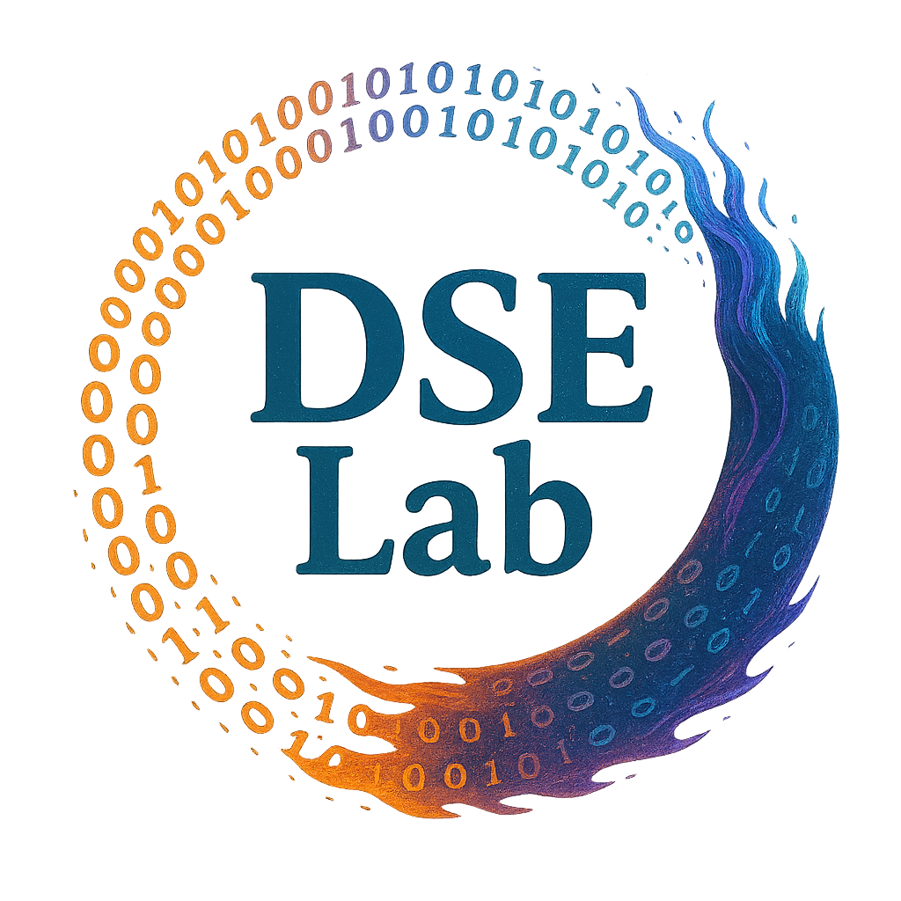
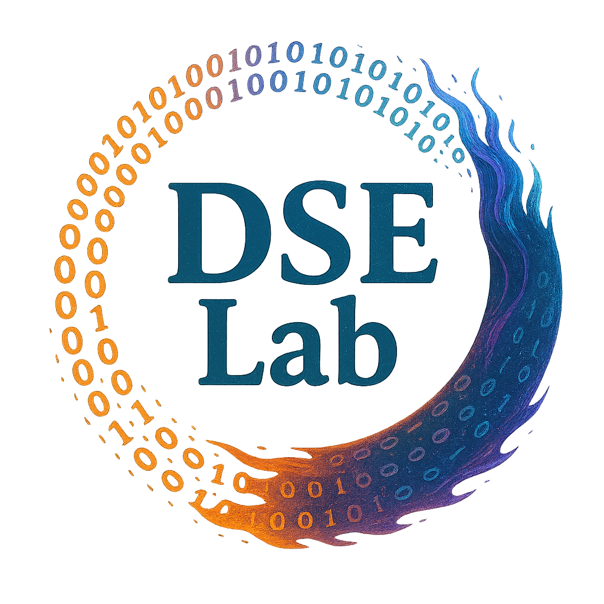

|
|

|
| Data Science & Econometrics Laboratory |
|
Data Science · Machine Learning · Econometrics Applications in Social and Natural Sciences |
|
||||||||||||||
|

|
Professor Qingfeng Liu
Chair, Department of Industrial and Systems Engineering, Faculty of Science and Engineering, Hosei University Origin Inner Mongolia, China Degree Ph.D. in Economics, Kyoto University Research Academic Publications Hobbies Badminton, Gardening E-mail qliu[at]hosei.ac.jp |
CREDO Enjoy what you commit to; master what you undertake.
PREDICTION Japan’s economy will be revitalized by craftsmanship.
MOTTO Welcome others as allies rather than oppose them.

|
|
Graduating Class of 2024
[1] Building and Evaluating a Ranking Prediction Model Using Machine Learning: A Case Study of
Horse-Racing Prediction, Teruhide Iwasaki, Kosuke Tanaka, Sota Tokumaru, (2025).
[2] An Empirical Analysis of the Relationship Between Technical Indicators and Stock Price Movements, Kota Kubomura, (2025). [3] Data Analysis for Strategy Formulation in Soccer, Kanta Shimomura, Masaya Hayashi, (2025). [4] Detecting and Analyzing Accounting Fraud Using Machine Learning, Toshinori Tajima, Madoka Hirata, (2025). |
|
Graduating Class of 2023 |
|
Graduating Class of 2022
[1] Stock Price Rise/Fall Prediction Using Combined Tweet and Index Data, Chihiro Kurosaki, Takeo
Yamada, (2023).
[2] The Impact of Telework Promotion and Migration Support Policies on Population Issues, Chuya Oshima, Tsubasa Maeda, (2023). [3] Data Analysis of Factors Determining Soccer Match Outcomes, Koki Ito, Hiroki Kano, Ryota Kitabayashi, (2023). |
|
Master’s Program (Expected Completion in 2025)
[1] Vertical-Federated Learning Using Adversarial Autoencoders, Kai Huang, (Grad. 2025).
[2] Calibration of Rough Volatility Models Using Differential Machine Learning, Chihiro Kurosaki, (EGrad. 2025). |
|
Class of 2024 – Employment
Major audit firms, Metropolitan Police Department, financial advisory firms, major regional banks,
leading card companies, major general consulting firms, data science divisions at major automobile
manufacturers, and software development divisions at major IT companies (job offers).
|
|
Swim freely in the open sea.